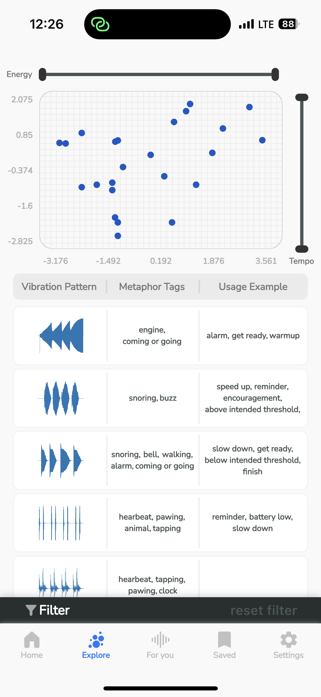

What is vibroacoustic therapy?
Vibroacoustic therapy (VAT) is a form of sound therapy that involves delivering low-frequency signals to the body through a device. Music's rhythmic nature is essential to the vibratory effect of VAT. Scientific studies have demonstrated the potential benefits of VAT for a range of conditions, including Parkinson’s, PTSD, anxiety, physical injuries, brain function, dementia, COPD, and asthma.
What is vibroacoustic signal?
Vibroacoustic therapy signals range from 20 Hz to 100-250 Hz, which is the same frequency range as the body's energy channels. This therapy can be used to align these energy channels and promote overall health.
Haptic sensation, or the sense of touch, is crucial for VAT. One of the key differences between sound vibration and music is that sound vibration can mechanically stimulate cells. At Sensci lab, we use our expertise in haptic science to deliver the most effective vibroacoustic therapy using state-of-the-art haptic technologies.

Quality haptic experiences
Introducing our latest innovation, a device specifically engineered to create natural acoustic vibrations reminiscent of the soothing sounds of a Tibetan singing bowl and gentle cricket symphonies. Let it take you on a journey, transporting you from the concrete jungles of urban life to the tranquility of untouched nature. But why is this necessary? Let's delve into the science and the rationale.

VAT signal visualization app
Sensci app enables users to personalize VAT signals for their own preference and utilitarian needs. Some of the key features include:
Access to large VAT signal libraries by means of visualizing vibrations and their descriptive facets
Signal facets and their substructure and linkages
Tuning filters (slider) for VAT signals
Simple personalization tools for end-users to create and save their own signal
Why does VAT matter?
Human beings have a deep, evolutionary connection with nature. For thousands of years, our ancestors lived amidst the forests, mountains, and rivers, where natural soundscapes provided the background rhythm to life. It wasn't just idle noise. These sounds were the pulse of the world around us, and in many ways, they connected us to our surroundings.
Yet in the urban sprawl that defines most of our lives today, we are increasingly disconnected from these natural vibrations. The hum of air conditioning, the relentless honking of traffic, the constant whirring of machinery — all these artificial noises have replaced the sound of the wind rustling through trees, the symphony of night insects, and the resonance of a distant thunderstorm.
But why does this matter? Scientifically speaking, the vibrations we perceive as sound influence us in profound ways. As explained by Scientific American, these vibrations are transformed in our cochlea into electrical signals that our brain interprets as sound [1].
Our device leverages this knowledge, harnessing the power of acoustics not just for auditory pleasure, but potentially for healing and wellbeing, akin to the promising ideas exploited by innovators like Demirci and his exploration of Faraday waves [2].
Imagine the possibilities: the potential to reduce stress, to promote relaxation, and to help reconnect us with the natural world that our bodies and minds have evolved to understand. This is not just about replacing the city's soundscape with a more pleasing one. It's about restoring an essential connection to nature, about stimulating the deep resonances that our modern lifestyles often leave untouched.
Embrace the balance that our ancestors inherently understood. With our device, reconnect with the natural acoustic vibrations and experience the soothing, healing power of nature, even within the heart of the city. Together, let's tune in to the world's original symphony and rediscover the harmonious rhythm of life as it was meant to be.